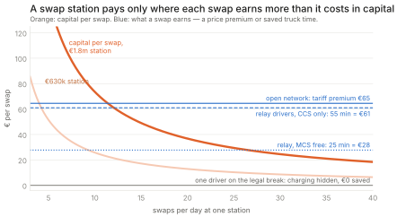
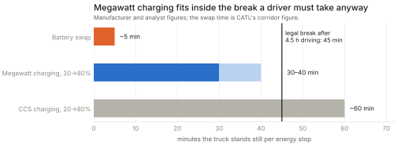
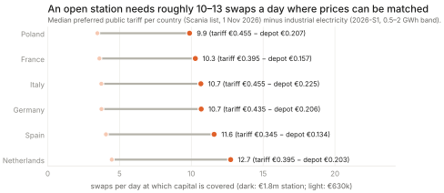
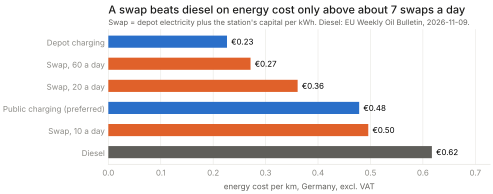
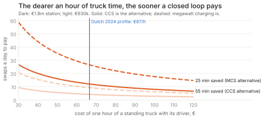
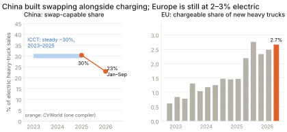

Right for the trucks they sell today and for an open network; wrong to rule swapping out. A single driver loses nothing where a megawatt charger is free during the mandatory break, and about 15 minutes per stop on today's CCS; and an open swap network needs 10–13 swaps a day per station on one battery format that Europe does not have. But a fleet that keeps trucks moving with relay drivers can make a closed loop pay from about 12–15 swaps a day while megawatt chargers remain scarce — and they are scarce.
| Who is asking | What the evidence says | What to do |
|---|---|---|
| A fleet with single-driver long haul | Charging fits the legal break; swapping saves no time | Plan on depot plus megawatt charging; book chargers |
| A fleet running trucks around the clock | Each swap saves 25–55 minutes worth €28–61 | Price a closed loop against your own hourly cost |
| An investor in a public swap network | Capital is covered at 10–13 swaps a day, but only on one pack format | Wait for a cross-maker standard; it is the gate |

"Is swapping needed?" is asked by three different people: a fleet choosing how to refuel electric trucks, an investor deciding whether to fund a swap network, and a policymaker deciding which infrastructure to support. They need different answers. The common question underneath is narrower: in which operations does a five-minute swap earn back the capital it ties up? A swap pays only if each swap earns more than its share of the station's capital — either a price premium (an open network selling energy) or saved truck time (a fleet's own closed loop). We therefore audited both sides' claims against those two earning streams.
We took the ten claims made by the two sides in the article and tested each against primary data where it exists: EU law for driver breaks and charging targets, Eurostat for electricity, the operator price list for public charging, ACEA for registrations, the Comité National Routier for truck costs. The model that turns these into earnings per swap is a few lines of code; every parameter carries a class — Ddocumented, Iestimate, Oour assumption — and can be changed and rerun.
| Model input | Value | Source and class |
|---|---|---|
| Station capital (24 packs × 500 kWh at €100/kWh, plus station) | €1.8m | Iour own build-up, above the published USD 1.0–1.5m [C11]; one Chinese operator reports €630k [C12] |
| Cost of capital, life | 8%, 10 years | Oassumption |
| Energy exchanged per swap | 300 kWh | O60% of a 500 kWh pack |
| Median preferred public tariff, EU rows of the list (14 countries) | €0.395/kWh | DScania price list, 1 Nov 2026, all 75 EU rows |
| Industrial electricity, EU-27, 0.5–2 GWh band | €0.180/kWh | DEurostat, 2026-S1 |
| Cost of a standing truck with driver | €67/h | Iderived from CNR's 2024 Dutch cost profile |

D EU law requires a 45-minute break after 4.5 hours of driving [C01], and the EU's charging regulation explicitly aims for recharging within that break [C02]. Truckmakers say megawatt charging refills 20–80% in about 30 minutes [C03, C04]; analysts say 30–40. Both fit inside the break. Renault Trucks adds that its 660 km range covers 80% of long-haul missions, 90% with one fast-charge break [A02] — a claim we cannot check, because the data are not published.
I The argument has two conditions the truckmakers do not state. First, a charger must be free. Germany had seven public megawatt points at the end of April 2026 [C26]. The truckmakers' joint venture targets at least 1,700 high-performance points across Europe by 2027, without saying how many will be megawatt-capable [A04, C24]. Today most trucks would charge on standard CCS, at about an hour — longer than the break. Second, the driver must actually stop. A truck run by relay drivers or in two shifts does not wait for a rest break; the driver changes and the truck goes on. There the charge is pure downtime, and a swap saves 25 minutes against megawatt charging or 55 against CCS [C32].
| ID | Claim | Verdict |
|---|---|---|
| A01 | Megawatt charging takes a battery from 20% to 80% in 30–40 minutes, so it fits the driver's legal rest break | Holds if a charger is free |
| A03 | Swapping needs rival truckmakers to share battery, hardware, software and protocols; Europe has no such standard | Holds |
| A05 | Swapping compresses a stop to roughly the time of a diesel refuel | Holds |
| A08 | CATL runs more than 300 heavy-truck swap stations in China, serving 12 truckmakers and 16 models; plans 900 by end-2026 | Holds |
The disagreement is not about facts but about which operation is typical. Truckmakers describe a single-driver tour with a long break; CATL describes Chinese fleets running trucks hard between mines, ports and plants.

I An open swap station sells energy, so its margin is the gap between what truckers pay at public chargers and what the station pays for power. On the full price list — 75 EU truck tariffs from 42 operators, €0.25–0.58/kWh, median €0.395 [C18] — that gap is €0.215/kWh against EU industrial power. A swap of 300 kWh thus earns €65, and the station covers its capital at 11.4 swaps a day. Matching each country's tariff with its own power price gives 9.9 (Poland) to 12.7 (Netherlands) [C14]. With the cheapest published station capital, the threshold falls to about 4.
That volume is modest: at roughly 270 km per swap, 10–13 swaps a day is 5–6 trucks swapping twice daily (our illustration). The barrier is not traffic but format. An open network needs that volume at every station along a corridor, on one battery that fits trucks of several brands. No such standard is adopted in Europe [C15], the three largest truckmakers own the competing charging network [C24], and they have said they will not adopt a CATL-led standard [A03].
Capital only: the calculation leaves out staff, grid connection fees, land and battery wear, so the real thresholds are higher. It also assumes every swap sells at the public tariff.
The swap advocates say swapping costs more than charging but less than diesel [A07]. In Germany a swap is cheaper per km than diesel above about 7 swaps a day and always dearer than depot charging. That rests on November 2026 diesel prices, near a peak; at the 2025 average (€1.35 a litre before VAT) the threshold is about 13 swaps a day.

I In a closed loop the fleet owns the station and the alternative is charging at its own depot, so there is no price premium to earn. The case rests on time. A Dutch 40-tonne truck on international routes costs €42.36 per driving hour in driver pay plus €24.18 in financing, insurance, taxes and overheads [C28]: about €67 for every driving hour it loses [C29]. A truck run in two shifts spreads its fixed costs over twice the hours, which gives about €54; the thresholds below then rise to 15 (CCS) and 32 (megawatt). Fuel, tyres and tolls are left out because a standing truck does not use them.
| Operation | Minutes saved per swap | Worth per swap | Pays from (€1.8m / €630k station) |
|---|---|---|---|
| One driver, megawatt charger free in the break | 0 | €0 | never |
| One driver, only CCS charging | 15 | €17 | 44 / 15 swaps a day |
| Relay drivers, megawatt charger free | 25 | €28 | 27 / 9 swaps a day |
| Relay drivers, only CCS charging | 55 | €61 | 12 / 4 swaps a day |

At 20 swaps a day a swap must save at least 33 minutes to pay for itself on the high capital estimate. That rules out single-driver fleets and favours depots, ports, quarries and parcel hubs that run trucks in shifts — exactly the closed, high-use operations where Chinese swapping grew. The €67 figure is for a diesel truck; an electric truck's financing costs more, which raises the value of its time and favours swapping.
The swap advocates' second argument — that leasing the battery takes it out of the truck's price [A06] — is true but moves the cost into a fee rather than removing it; the station's capital above is that cost.

D CATL ran 305 heavy-truck swap stations at the end of 2025 and targets 900 in 2026 [C06]. But swap-capable trucks held a steady share of about 30% of China's electric heavy-truck sales in 2023–2025 [C20]; one compiler shows 30% in 2025 and 23% in January–September 2026 [C21]. Earlier figures near 55% come from other compilers with other scopes and are not comparable [C22]. China built swapping alongside charging, in a market where electric trucks are a quarter of sales; it did not replace charging. In the EU, electrically chargeable trucks were 2.0% of new heavy trucks in 2025 and 2.5% in January–September 2026 (2.7% in the third quarter) [C09, C23].
| Swapping will be needed in Europe after all if… | …and it is not needed if |
|---|---|
| Megawatt charging stays scarce: fewer than 100 public points in Germany by end-2027 (7 in April 2026) | The 2027 target is broadly met with a large share of megawatt-capable points, and charge times stay at 30–40 minutes |
| Chinese truckmakers bring swap-ready trucks to Europe and win round-the-clock fleets | European fleets stay single-driver and the break keeps hiding the charge |
| Battery leasing proves decisive for fleets that cannot finance a €100,000+ battery | Truck prices fall enough that the battery's upfront cost stops being the barrier |
| Scenario | Entry signal | Cancellation |
|---|---|---|
| S1 · Charging wins — the truckmakers' path | More than 100 public MCS points in Germany; median preferred tariff below €0.30/kWh | MCS build-out stalls below target through 2027 |
| S2 · Closed-loop niche | Swaptopus opens UK hubs in 2027 serving third-party trucks [A10]; a European fleet signs for a closed loop | No operating European site by end-2028 |
| S3 · Open network | Two or more European truckmakers adopt one swap format (DIN SPEC 91533 or a CATL design) [C08] | Formal rejection by the major makers; standard work abandoned |
All signals are public: the German charging-network registry, the Scania price list, company announcements and standards bodies. Check them quarterly.
The ten audited claims and the 32 facts behind them are in claims.csv; raw data in data/raw/; every data-derived number in this report is computed by code/build.py and written to data/derived/facts.json. Earnings per swap cover capital only, not a full profit-and-loss account. The cost of a standing truck is derived from a published diesel-truck profile.
| Framework | Mechanism and test | Holds only if | What we see |
|---|---|---|---|
| Katz & Shapiro (1985): network externalities | Firms with a large installed base may prefer incompatibility. Test: do incumbents block a shared standard? | Incumbents gain more from lock-in than from a bigger market | Truckmakers own the charging network and reject a CATL-led format |
| David (1985); Arthur (1989): lock-in | Early adoption can tip a market to one technology. Test: is a format gaining irreversible share? | Increasing returns to adoption | EU infrastructure is tipping toward charging; electric trucks are still 2–3% of sales |
| Williamson (1985): asset specificity | Assets tied to one partner invite hold-up and favour integration. Test: who owns the swap station and pack? | The pack is specific to one format | Closed loops, where the fleet owns both, avoid the hold-up an open network faces |
| Better Place (2013): single-format precedent | A swap network tied to one vehicle model failed [C30] | Passenger cars, not trucks | Warns against open networks before a standard |
| Dixit & Pindyck (1994): real options | Under irreversibility and uncertainty, waiting has value | Investment is hard to reverse | Supports waiting on open networks and piloting closed loops |
Frameworks suggest tests; none is evidence that its mechanism operates here. References in theory_sources.md.
| ID | Side | Claim | Verdict |
|---|---|---|---|
| A01 | truckmakers | Megawatt charging takes a battery from 20% to 80% in 30–40 minutes, so it fits the driver's legal rest break | Holds if a charger is free |
| A02 | truckmakers | Existing range already covers most long-haul work: 660 km covers 80% of missions, 90% with one 45-minute fast-charge break | Unverifiable company data |
| A03 | truckmakers | Swapping needs rival truckmakers to share battery, hardware, software and protocols; Europe has no such standard | Holds |
| A04 | truckmakers | Scania and partners target 1,700 high-performance charging points by 2027 | Target misquoted: high-performance, not megawatt, points |
| A05 | swap advocates | Swapping compresses a stop to roughly the time of a diesel refuel | Holds |
| A06 | swap advocates | Leasing the battery removes it from the truck's upfront cost | Holds; the cost moves to a fee |
| A07 | swap advocates | Swapping costs more than standard charging but less than diesel | Holds above ~7 swaps a day at Nov 2026 diesel prices |
| A08 | swap advocates | CATL runs more than 300 heavy-truck swap stations in China, serving 12 truckmakers and 16 models; plans 900 by end-2026 | Holds |
| A09 | swap advocates | China shows swapping scales: swap networks are common where new-energy trucks reached 29% of sales | Partly |
| A10 | swap advocates | The Swaptopus venture (CATL and Octopus Energy) plans 30 European stations by 2035, first UK hubs in 2027 | Announced plan |